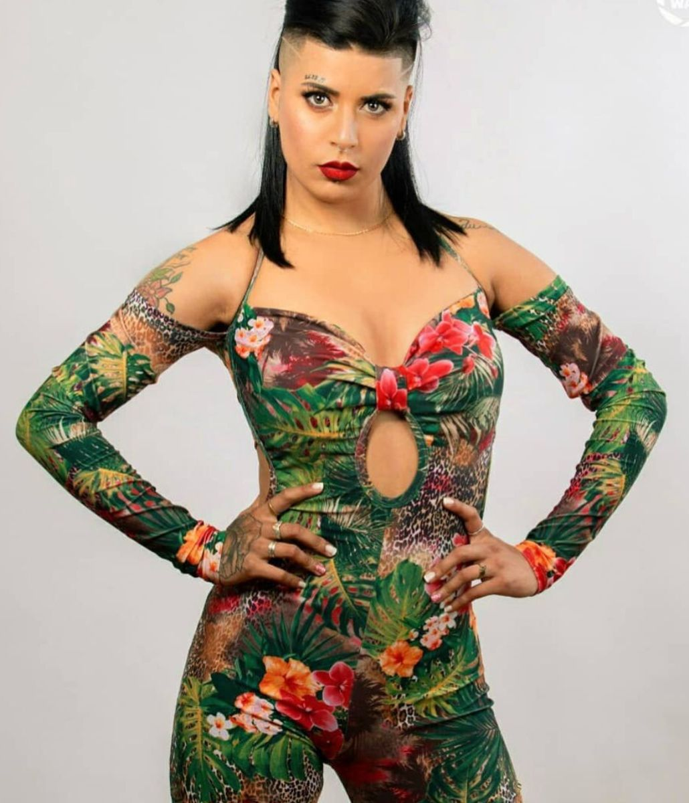

Hola, me alegro que quieras conocer más sobre mí, soy Yeika, y en Instagram me conocen como Ckanela. Soy creadora de contenido, community manager e influencer. Me dedico a colaborar con marcas, negocios y emprendimientos que quieren mejorar su presencia en internet y comunicarse de forma más profesional en redes sociales.
A lo largo de mi trabajo he construido una comunidad de casi 90 mil seguidores en Instagram y también tengo presencia activa en TikTok, donde mis publicaciones han alcanzado millones de visualizaciones.
He colaborado con diferentes tipos de negocios como locales comerciales, gastronomía, gimnasios, emprendimientos de belleza y marcas personales que buscan mejorar su presencia digital.
Mi enfoque está en crear contenido visual atractivo y estratégico que ayude a los negocios a destacarse, fortalecer su imagen digital y ganar visibilidad tanto en redes sociales como en Google.
Además de la creación de contenido, también realizo material visual como flyers, tarjetas promocionales y piezas digitales para campañas y promociones.
Mi objetivo es ayudar a que los negocios tengan mayor visibilidad, atraigan nuevos clientes y construyan una presencia digital profesional y atractiva.
Creación de fotos y videos promocionales en alta calidad para redes sociales y campañas digitales.
Estrategias de contenido, estética de perfiles y crecimiento de comunidad en Instagram.
Promoción de marcas, productos y negocios a través de contenido, colaboraciones y campañas.
Sitios web modernos, rápidos y optimizados para celulares, ideales para negocios y profesionales. Entrega en menos de 72 horas y pago único.
Ayudar a que los negocios crezcan, tengan más visibilidad, atraigan más clientes y se posicionen profesionalmente en internet.
ContactarAdemás de crear contenido y trabajar con marcas, hay algo que forma parte de mi vida y de mi energía: el baile.
Soy profesora de bachata, un estilo que me apasiona porque mezcla ritmo, conexión y expresión. Me gusta enseñar, compartir lo que sé y ayudar a que otras personas se animen a moverse, soltarse y disfrutar.
La música, el movimiento y la actitud que se vive en el baile también forman parte de quién soy, y esa misma energía es la que llevo después a mis contenidos y a cada proyecto en el que trabajo.
Si llegaste hasta acá, probablemente te interese trabajar conmigo. Solo falta que nos pongamos en contacto.
Enviar mensaje